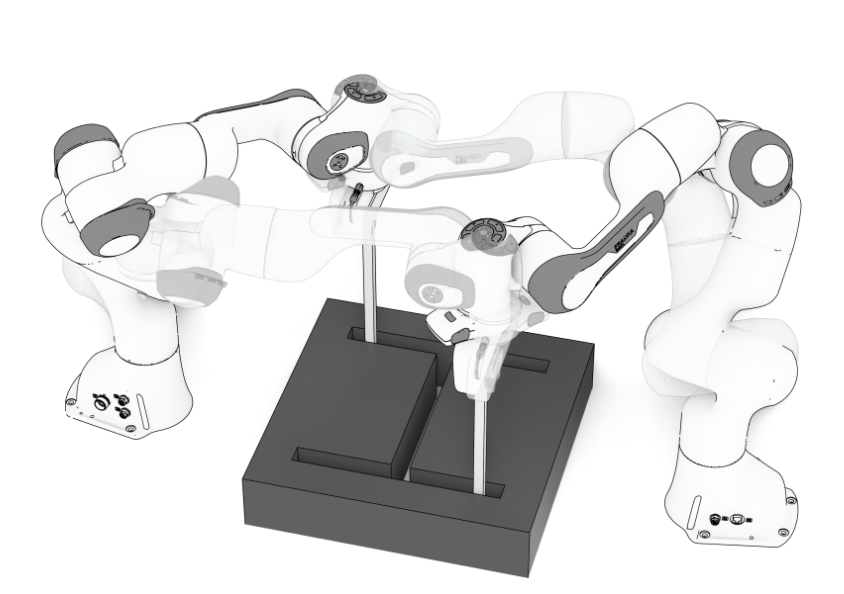
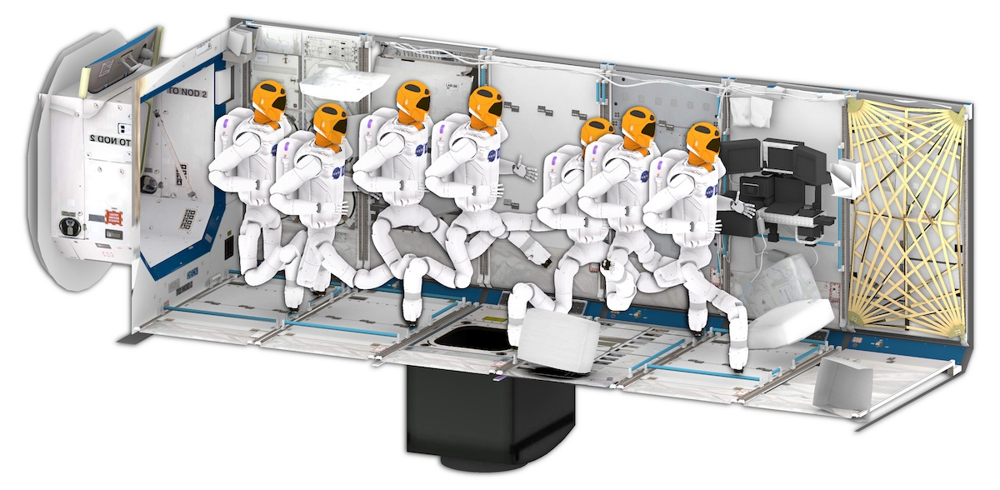
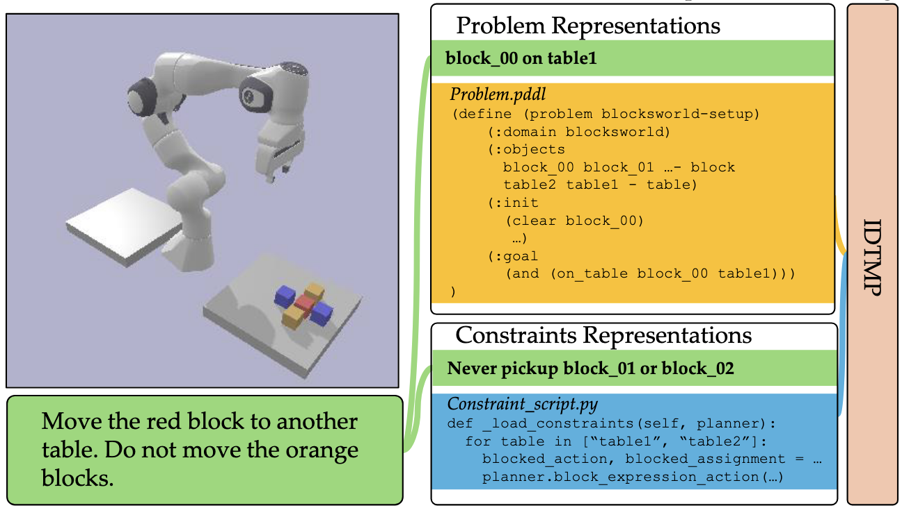

Efficient Multi-Robot Motion Planning for Manifold-Constrained Manipulators by Randomized Scheduling and Informed Path Generation
IEEE Robotics and Automation Letters (RA-L), 2026
I am a first year Ph.D. student at Rice University advised by Prof. Lydia Kavraki. I am also honored to collaborate with Prof. Zak Kingston and Prof. Kaiyu Hang.
My research interests include robot safety, high-performance robotic systems, and multi-robot planning.
I am a maintainer of The Open Motion Planning Library (OMPL).


